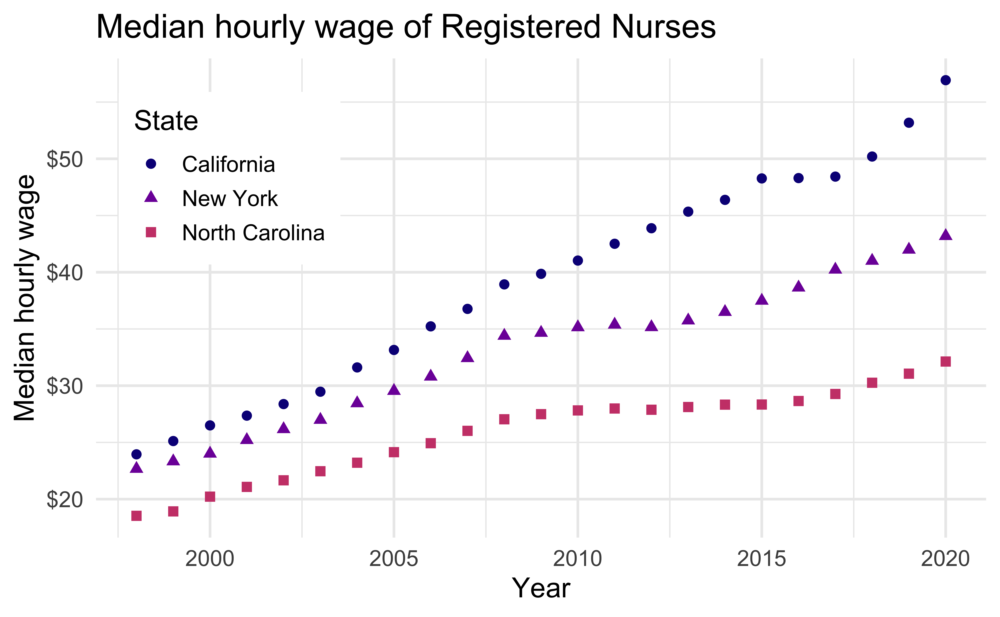
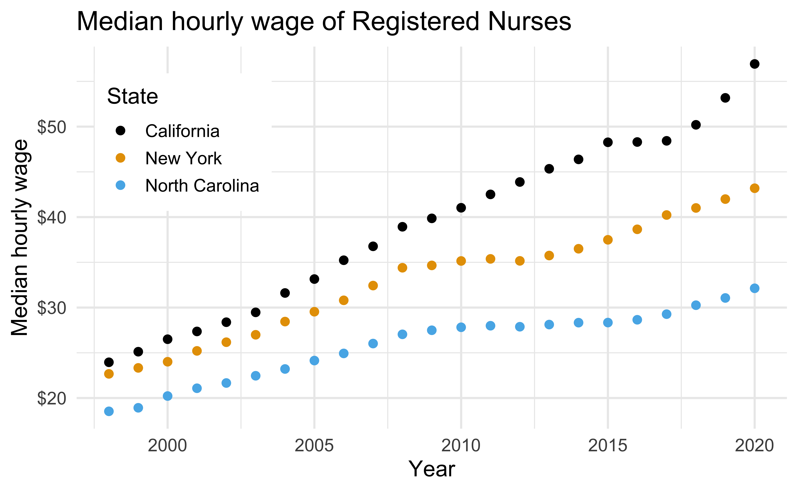
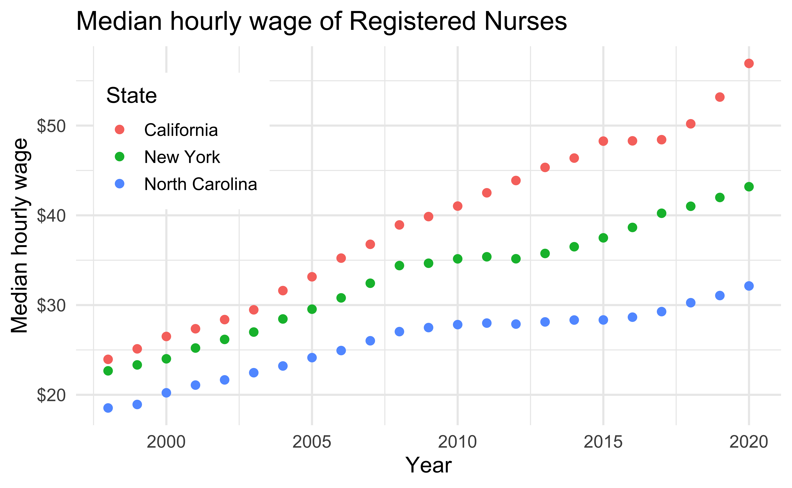
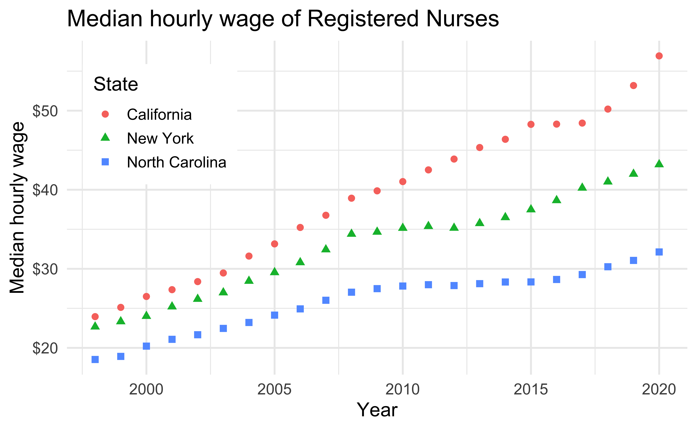
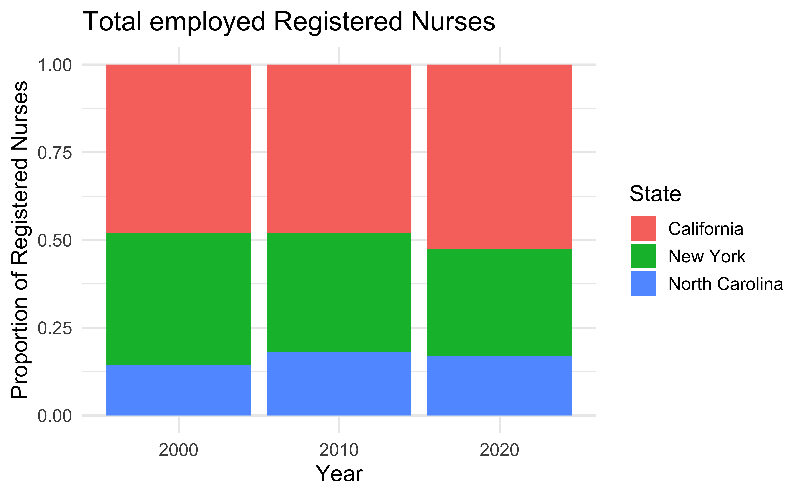

# load packages
library(tidyverse)
library(ggthemes)
library(scales)
library(coloratio) # pak::pak("matt-dray/coloratio")
# set theme for ggplot2
ggplot2::theme_set(ggplot2::theme_minimal(base_size = 14))
# set figure parameters for knitr
knitr::opts_chunk$set(
fig.width = 7, # 7" width
fig.asp = 0.618, # the golden ratio
fig.retina = 3, # dpi multiplier for displaying HTML output on retina
fig.align = "center", # center align figures
dpi = 300 # higher dpi, sharper image
)Accessibility
Lecture 9
Dr. Mine Çetinkaya-Rundel
Duke University
STA 313 - Spring 2026
Warm up
Announcements
HW 2 due today at 5 pm
Project 1 proposals for instructor review due on Wednesday at 1 pm
Mini-project 1 posted!
Setup
From last time
Finish up
Go to ae-06 to finish off the diverging bar chart.
Do you remember?
Flatten the curve

Exponential spread

JHU COVID-19 Dashboard

What do they all have in common?
Accessibility and screen readers
Alternative text
It is read by screen readers in place of images allowing the content and function of the image to be accessible to those with visual or certain cognitive disabilities.
It is displayed in place of the image in browsers if the image file is not loaded or when the user has chosen not to view images.
It provides a semantic meaning and description to images which can be read by search engines or be used to later determine the content of the image from page context alone.
The Four-Ingredients Model
Canelón and Hare (2021) developed four questions for writing alt text:
What kind of graph or chart is it? Beginning with chart type helps readers anticipate the information.
What variables are on the axes? Use actual variable names, not color descriptions. Research shows tracking colors adds cognitive load.
What are the ranges of the variables? Provides context for understanding relationships and order of magnitude.
What does the appearance tell you about the relationships between the variables? The key takeaway - why are you including this visualization?
The Four-Levels Model
Lundgard and Satyanarayan (2021) categorized meaningful alt text into four levels:
- Level 1: Elemental and encoded properties (title, legend, axis names, chart type)
- Level 2: Statistical concepts and relations (mean, median, range, quantitative relations)
- Level 3: Perceptual and cognitive phenomena (trends, outliers, patterns)
- Level 4: Contextual and domain-specific insights (interpretations, causation)
Alt texts should be long enough to include Level 2 and Level 3 information, not just Level 1.
Alt and surrounding text
"CHART TYPE of TYPE OF DATA where REASON FOR INCLUDING CHART`
+ Link to data source somewhere in the textCHART TYPE: It’s helpful for people with partial sight to know what chart type it is and gives context for understanding the rest of the visual.
TYPE OF DATA: What data is included in the chart? The x and y axis labels may help you figure this out.
REASON FOR INCLUDING CHART: Think about why you’re including this visual. What does it show that’s meaningful. There should be a point to every visual and you should tell people what to look for.
Link to data source: Don’t include this in your alt text, but it should be included somewhere in the surrounding text.
Data
- Registered nurses by state and year
- Number of nurses, salaries, employment
- Source: TidyTuesday
[1] "state"
[2] "year"
[3] "total_employed_rn"
[4] "employed_standard_error_percent"
[5] "hourly_wage_avg"
[6] "hourly_wage_median"
[7] "annual_salary_avg"
[8] "annual_salary_median"
[9] "wage_salary_standard_error_percent"
[10] "hourly_10th_percentile"
[11] "hourly_25th_percentile"
[12] "hourly_75th_percentile"
[13] "hourly_90th_percentile"
[14] "annual_10th_percentile"
[15] "annual_25th_percentile"
[16] "annual_75th_percentile"
[17] "annual_90th_percentile"
[18] "location_quotient"
[19] "total_employed_national_aggregate"
[20] "total_employed_healthcare_national_aggregate"
[21] "total_employed_healthcare_state_aggregate"
[22] "yearly_total_employed_state_aggregate" Alt text for bar charts
- Provide title and axis labels
- Briefly describe the chart and give a summary of any trends it displays
- Convert bar charts to accessible tables or lists
- Avoid describing visual attributes of the bars (e.g., dark blue, gray, yellow) unless there’s an explicit need to do so
![The figure is a bar chart titled "Total employed Registered Nurses" that displays the numbers of registered nurses in three states (California, New York, and North Carolina) over a 20 year period, with data recorded in three time points (2000, 2010, and 2020). In each state, the numbers of registered nurses increase over time. The following numbers are all approximate. California started off with 200K registered nurses in 2000, 240K in 2010, and 300K in 2020. New York had 150K in 2000, 160K in 2010, and 170K in 2020. Finally North Carolina had 60K in 2000, 90K in 2010, and 100K in 2020.](09-accessibility_files/figure-revealjs/unnamed-chunk-3-1.png)
Developing the alt text
- Total employed registered nurses in three states over time.
- Total employed registered nurses in California, New York, and North Carolina, in 2000, 2010, and 2020.
- A bar chart of total employed registered nurses in California, New York, and North Carolina, in 2000, 2010, and 2020, showing increasing numbers of nurses over time.
- The figure is a bar chart titled “Total employed Registered Nurses” that displays the numbers of registered nurses in three states (California, New York, and North Carolina) over a 20 year period, with data recorded in three time points (2000, 2010, and 2020). In each state, the numbers of registered nurses increase over time. The following numbers are all approximate. California started off with 200K registered nurses in 2000, 240K in 2010, and 300K in 2020. New York had 150K in 2000, 160K in 2010, and 170K in 2020. Finally North Carolina had 60K in 2000, 90K in 2010, and 100K in 2020.”
Alt text for line graphs
- Provide title and axis labels
- Briefly describe the graph and give a summary of any trends it displays
- Convert data represented in lines to accessible tables or lists where feasible
- Avoid describing visual attributes of the lines (e.g., purple, pink) unless there’s an explicit need to do so
![The figure is titled "Annual median salary of Registered Nurses". There are three lines on the plot: the top labelled California, the middle New York, the bottom North Carolina. The vertical axis is labelled "Annual median salary", beginning with $40K, up to $120K. The horizontal axis is labelled "Year", beginning with couple years before 2000 up to 2020. The following numbers are all approximate. In the graph, the California line begins around $50K in 1998 and goes up to $120K in 2020. The increase is steady, except for stalling for about couple years between 2015 to 2017. The New York line also starts around $50K, just below where the California line starts, and steadily goes up to $90K. And the North Carolina line starts around $40K and steadily goes up to $70K.](09-accessibility_files/figure-revealjs/unnamed-chunk-4-1.png)
Writing the alt text
Write alt text for the line graph.
Alt text for scatter plots

Scatter plots are among the more difficult graphs to describe, especially if there is a need to make specific data point accessible.
- Identify the image as a scatter plot
- Provide the title and axis labels
- Focus on the overall trend
- If it’s necessary to be more specific, convert the data into an accessible table
Writing the alt text
Write alt text for the scatter plot.
Adding alt text to plots
- Short:
- Longer:
Context matters for alt text
The same chart can have different valid alt texts depending on context:
“Line chart.” - If appearing in a chart-picker interface
“A line chart with five lines, titled Product Performance in 2021.” - In a design mockup
“Line chart. Product Performance in 2021. Product A is outperforming all other products.” - For a decision-maker
“Line chart. Product Performance in 2021. All products trended down sharply from January until June and slowly stabilized back into positive territory by November.” - For analysts interested in trends
Only a human author understands why they’ve made something and what their audience should know.
Strategies for writing good alt text
Describe meaningful aspects - Tell the user the most important feature and what they should take away
Include quantitative data - If there’s a specific data point to highlight, include it
Remain brief and to the point - If you need to describe every data point, provide a table elsewhere
Limit symbols - Vertical bars, slashes, colons, and semicolons are voiced by screen readers. Write “x divided by y” instead of “x/y”
Limit URLs - They are not activatable in alt text. Spell out “dot com” if needed
Avoid repeating chart titles - If the title is in surrounding text, don’t repeat it in alt text
Tooling
Both of these are good examples, though not actively maintained:
ggalttext: An R package for writing alt text for ggplot2 visualizations – https://nrennie.rbind.io/ggalttext/.
Ra11y: collection of accessibilty features for ggplot2 charts – https://github.com/nicucalcea/Ra11y.
And, of course, AI!
Automatic alt text limitations
Machine learning tools for generating alt text:
- Can extract Level 1 information (chart type, title, axis labels)
- Can sometimes extract Level 2 information (some statistical facts)
- Cannot produce Level 3 information (trends, patterns, meaning)
- Cannot produce Level 4 information (context, interpretation)
“For the foreseeable future, automatic alt texts will be incomplete. They can be used as a starting point… but these partial alt texts should be avoided altogether or edited to add Level 2 and 3 information.”
Accessibility and colors
Color scales
Use colorblind friendly color scales (e.g., Okabe Ito, viridis)

nurses_subset |>
ggplot(aes(x = year, y = hourly_wage_median, color = state)) +
geom_point(size = 2) +
ggthemes::scale_color_colorblind() +
scale_y_continuous(labels = label_dollar()) +
labs(
x = "Year",
y = "Median hourly wage",
color = "State",
title = "Median hourly wage of Registered Nurses"
) +
theme(
legend.position = c(0.15, 0.75),
legend.background = element_rect(fill = "white", color = "white")
)The default ggplot2 color scale + deuteranopia
Deuteranopia: A type of red-green confusion
Default ggplot2 scale

Default ggplot2 scale with deuteranopia

The default ggplot2 color scale + tritanopia
Tritanopia: A type of yellow-blue confusion
Default ggplot2 scale

Default ggplot2 scale with tritanopia

Testing for colorblind friendliness
Color contrast I
Background and foreground text should have sufficient contrast to be distinguishable by users with different vision
Web app for checking color contrast checking: Colour Contrast Analyser
Color contrast II
A WIP R package for checking for color contrast: coloratio
Double encoding
Use shape and color where possible
Default ggplot2 scale

Default ggplot2 scale with deuteranopia

Use direct labeling
Prefer direct labeling where color is used to display information over a legend
Quicker to read
Ensures graph can be understood without reliance on color
Without direct labeling
Default ggplot2 scale

Default ggplot2 scale with deuteranopia

With direct labeling
Default ggplot2 scale

Default ggplot2 scale with deuteranopia

Use whitespace or pattern to separate elements
Separate elements with whitespace or pattern
Allows for distinguishing between data without entirely relying on contrast between colors
Without whitespace
Default ggplot2 scale

Default ggplot2 scale with tritanopia

With whitespace
Default ggplot2 scale

Default ggplot2 scale with tritanopia

Accessibility and fonts
Accessibility and fonts
Use a font that has been tested for accessibility (e.g., Atkinson Hyperlegible)
Keep plot labels and annotations similarly sized as the rest of your text (e.g.,
ggplot2::theme_set(ggplot2::theme_minimal(base_size = 16)))
When you design for accessibility, you benefit everyone
Beyond visual disabilities
Who has disabilities?
Accessibility in visualization often focuses on visual disabilities (color vision deficiency, blindness, low vision), but data visualizations can create barriers for people with:
- Cognitive disabilities - affecting memory, attention, problem-solving
- Motor and dexterity disabilities - affecting interaction with visualizations
- Vestibular disabilities - sensitivity to motion and animation
- Neurological disabilities - affecting processing of visual information
“Not everyone with disabilities will encounter barriers with data visualizations, but I want to encourage you to consider that most people with disabilities might.”
– Frank Elavsky, The Right Tools for the Job: Learning and Building for Data Visualization and Accessibility
Disability and area of visualization
| Approximate prevalence in the US | Aspect of visualization to consider | |
|---|---|---|
| Color vision deficiency | 4.2%1 | Visual design |
| Blindness, low vision | 4.5% | Visual design; Non-visual design; Narrative design, statistics, storytelling; Interaction design, device considerations; Animation, transitions |
| Vestibular, motion | 7.4% | Visual design; Narrative design, statistics, storytelling; Interaction design, device considerations; Animation, transitions |
| Cognitive, neurological | 10.8% | Visual design; Non-visual design; Narrative design, statistics, storytelling; Interaction design, device considerations; Animation, transitions |
| Motor, dexterity | 13.7% | Non-visual design; Interaction design, device considerations; Animation, transitions |
Cognitive load and accessibility
Cognitive Load Theory
Cognitive Load Theory (CLT) helps us consider mental processing when creating visualizations.
Two types of cognitive load:
- Intrinsic load: The inherent nature of the information, refined to its bare minimum
- Extraneous load: How the information is structured and presented
Goal: Optimize intrinsic load and reduce extraneous load to fit the visualization within the capacity of working memory.
CLT principles for data visualization
Multimedia principle: Use words and pictures because both are more effective than words alone. Readers are more likely to remember data presented as a chart rather than a dense table.
Contiguity principle: Present words and pictures simultaneously rather than successively, e.g., via direct labeling.
Coherence principle: Exclude extraneous words, sounds, or pictures. Adding unnecessary labels or visual distractors reduces the speed with which a reader comprehends and retains information.
Interactivity principle: Allow learners to control the presentation rate, e.g., in animations.
Signaling principle: Emphasize key steps in the representation, e.g., by highlighting and annotation.
Animation considerations
If you use animations in visualizations:
Reduce the number of animated elements to reduce cognitive load on working memory
Ensure animating objects move in a similar pattern to one another or reduce the number of animated objects
Announce or describe animations for blind readers by usings descriptions or ARIA live attributes for screen reader users
Other approaches to accessibility
Data sonification
Data sonification is the presentation of data as sound, i.e., auditory equivalent of data visualization.
Data physicalization / haptics
Data physicalization is the presentation of data as objects you can touch, i.e., sensory equivalent of data visualization.
Examples: https://datajournalism.com/read/longreads/lets-get-physical-how-to-represent-data-through-touch
Acknowledgements
COVID visualization examples:
Silvia Canelón and Liz Hare. Revealing Room for Improvement in Accessibility within a Social Media Data Visualization Learning Community